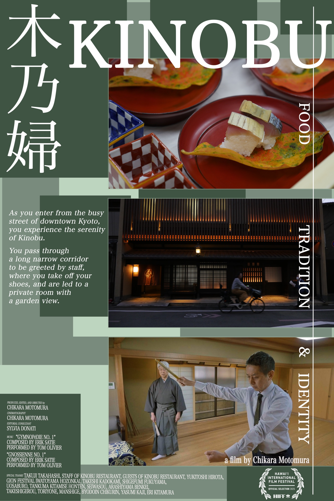

“As you enter from the busy street of downtown Kyoto, you experience the serenity of Kinobu.
You pass through a long narrow corridor to be greeted by staff, where you take off your shoes, and are led to a private room with a garden view.”
Takuji Takahashi, the maverick chef-owner of an acclaimed Kyoto restaurant, brings disciplined intensity and calm precision into his high-pressure kitchen, crafting traditional dishes that are as delicate as they are inventive.
The film centers on Takuji Takahashi, the third-generation chef-owner of Kinobu—a Michelin-starred ryōtei in downtown Kyoto—who honors the centuries-old roots of Japanese kaiseki cuisine while boldly reimagining its future. A practitioner of Noh, Japan’s oldest theatrical art, for over twenty years, Takahashi brings its Simultaneous discipline of intensity and calm precision into his high-pressure kitchen.
As a certified sommelier, Takahashi also collaborates with a leading Japanese winemaker to craft wines tailored specifically to the subtle umami of dashi and seasonal Kyoto ingredients. Immersive and intimate, the documentary reveals how culinary art, Noh performance, Gion Festival heritage, and seasonal presentation intertwine to express Japanese aesthetic sensibility and identity.
食
Food
Seasonal Kyoto kaiseki where razor-thin katsuramuki knife work, luminous dashi, and unconventional wine pairings honor centuries of craft while pushing Japanese cuisine forward.
伝統
Tradition
Over two decades of Kongō-school Noh training teach Takahashi to hold stillness and fire in the same breath—guiding a bustling brigade without raising his voice.
心
Identity
Rooted in Kyoto’s Shinmachi neighborhood and the centuries-old Gion Festival Iwatoyama community, Kinobu becomes a living mirror of cultural continuity.

Technical Specifications
Crafted in 4K Cinema Resolution.
Running Time
83 minutes (Feature Documentary)
Master Format
4K Ultra HD (3840×2160) · 23.976 fps · 16:9
Included Editions
English Subtitled Edition & Unsubtitled Original Japanese Master
Language & Audio
Japanese · 48 kHz Stereo
Music
Erik Satie — “Gymnopédie No. 1” & “Gnossienne No. 1” (performed by Tom Olivier)
Filmed On Location
Kyoto, Japan
03 · Visual Archive
Frames from Kinobu.
Select any frame to inspect in full screen.
Front of Kinobu at dusk on Shinmachi-dōri, downtown KyotoChef Takuji Takahashi arranging sea urchin (uni) in the kitchenSaba-zushi resting on an autumn persimmon leaf in vermilion lacquerwareTakuji Takahashi performing Noh mai before the painted pine stageKatsuramuki knife work: slicing watermelon radish into a translucent sheetSpring green-pea soup ladled over crisply grilled fish in gold-makie bowls
04 · Filmmaker
Chikara Motomura
Born in Japan and based in the San Francisco Bay Area, Chikara Motomura has worked for nearly thirty-five years as an independent documentary director, cinematographer, and editor across New York, Hawaii, and California. Beginning his career in New York, he spent more than two decades directing and shooting for major Japanese television networks including NHK, Japan’s public broadcaster.
After moving to the Bay Area in 1997, Motomura served as a principal collaborator on fourteen independent feature films with Sundance Grand Jury Prize and Cannes Caméra d’Or winner Rob Nilsson, and worked as cinematographer and editor on Link TV’s Peabody Award-winning program Mosaic. Often working as an intimate one-person camera and sound crew, his feature documentaries include the internationally screened Journey to Hokusai (2019), Kinobu: Food, Tradition, and Identity (2025), and the forthcoming The Last Boatbuilder.
Official Selection 2025. Premiered to festival audiences in Honolulu celebrating Pacific Rim and Japanese cinema.
Theatrical Run · November 2025
The Lark Theater — Larkspur, California
Extended month-long theatrical engagement in Marin County following unanimous audience response.
“It’s interesting to me how this quiet film captures the intensity that the subject brings to cooking, and the juxtaposition of the focused hustle of Kinobu’s hard-working chefs and the serenity of the private dining rooms is a compelling feature of the film. I admired the compositions and could almost smell the food in some of the lush shots!”
— Heidi H., Lark Theater
“Kinobu was a masterpiece. Filmmaker found all the beauty and humor in the fine restaurant world.”